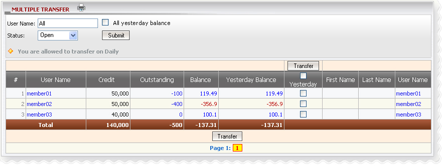

Definition:
Transfer refers to the amount of money that needs to transfer from sender to receiver for Win/Loss payment purposes. We have 2 types of transfer: single transfer or multiple transfers. You can only make the transfer if you're allowed to transfer on that day, and this is called transfer condition including: daily transfer and weekly transfer (Mon – Sun)
Note:

Term definition:
How to understand the report:
From the figure above, member01 was initially given 50,000, he/she bets 100 on running tickets, currently he/she wins 119.49 as today balance and yesterday balance was also 119.49.How to make the transfer:
Click on yesterday balance amount of each member to make the transfer or check on column ‘Yesterday’ then click ‘Transfer’ button to make a multiple transfer to all members whose yesterday balances are different from 0.